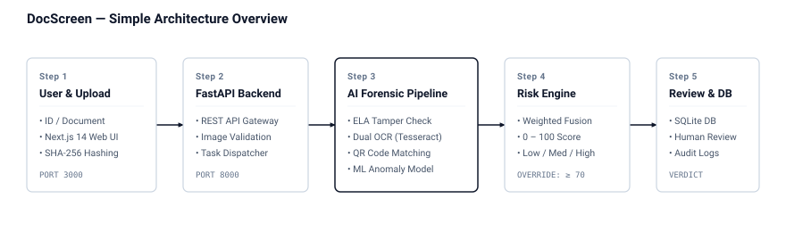

Documents (ID cards, passports) are uploaded via the Next.js web application (port 3000) and given an instant SHA-256 hash.
The Python backend (port 8000) validates the image and routes it asynchronously to the screening pipeline.
Runs Error Level Analysis (ELA) for image tampering, dual OCR for text, QR consistency checks, and an Isolation Forest anomaly model.
Synthesizes all pipeline findings into a single 0–100 risk score (Low, Medium, High). Critical discrepancies automatically escalate to ≥ 70.
Flagged documents enter the human verification queue for officer review, and all results are saved to an immutable SQLite database.